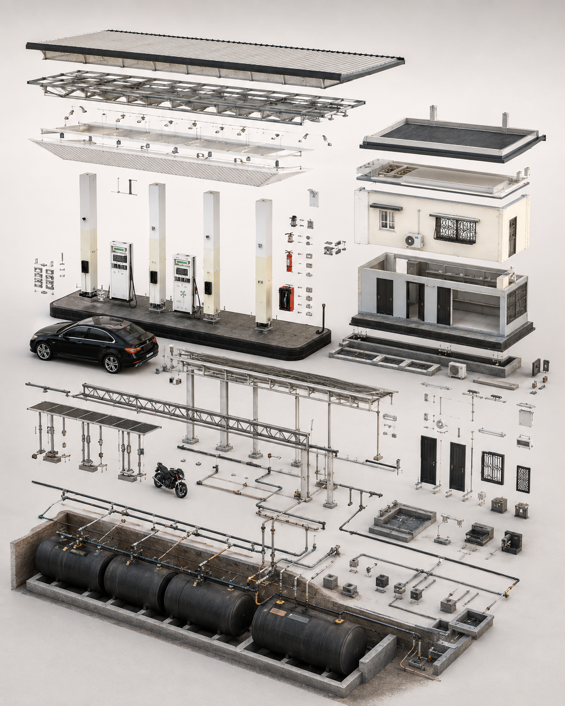
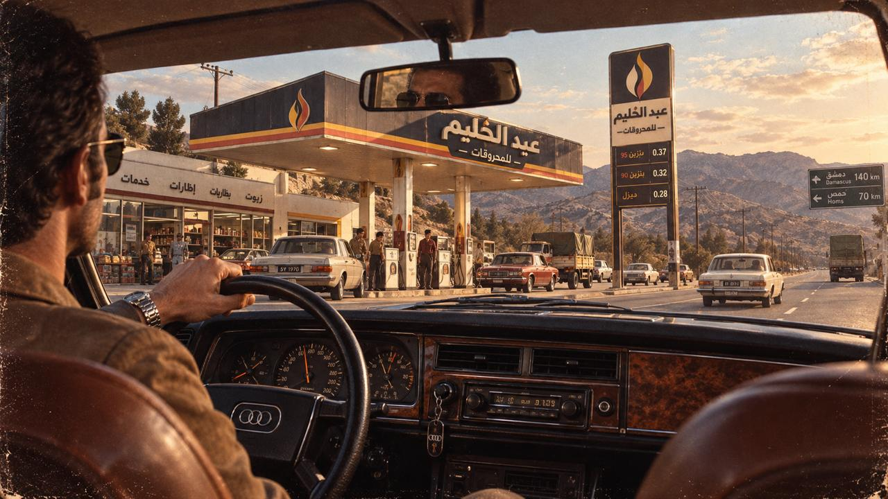
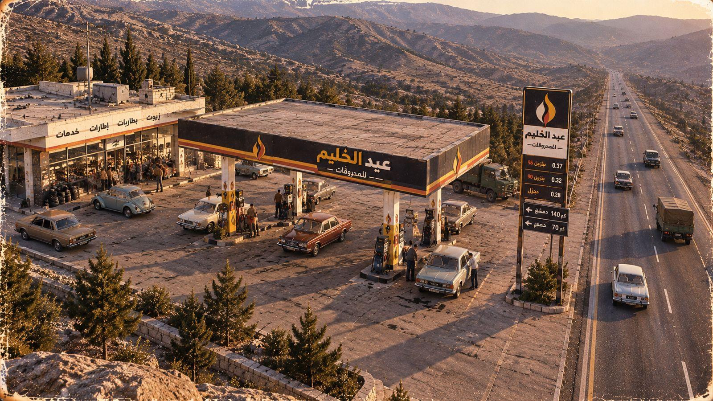
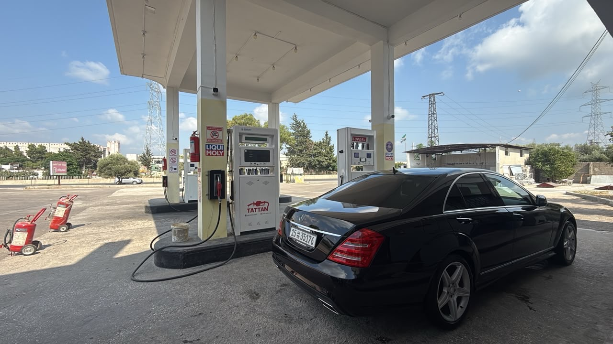
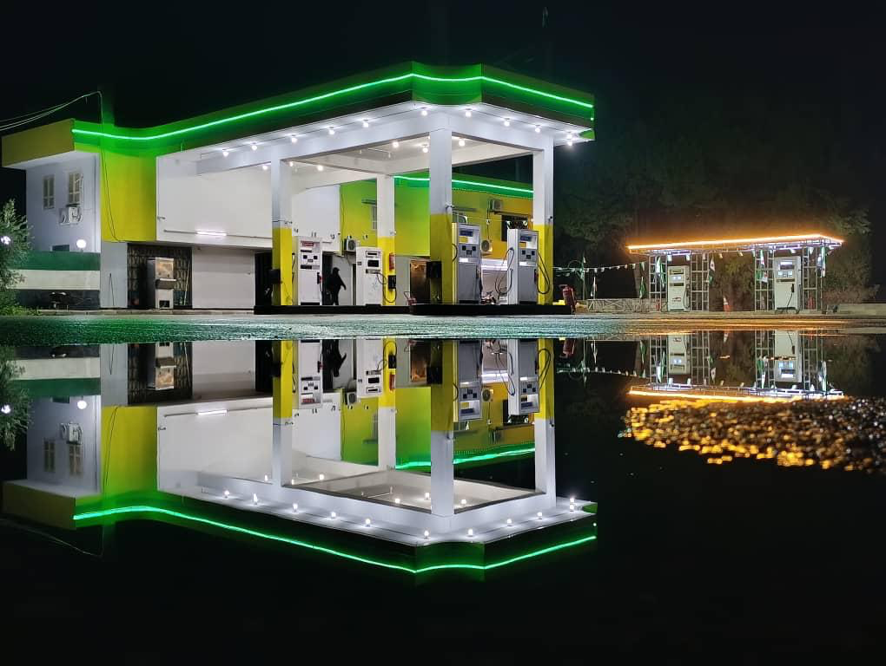
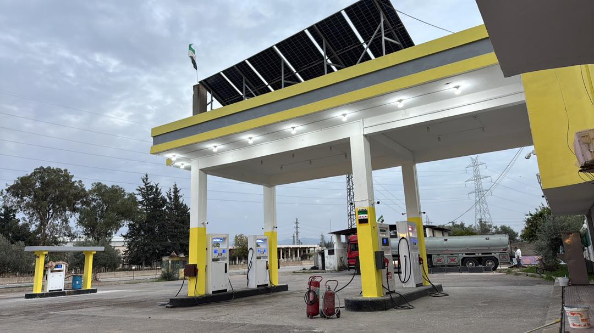
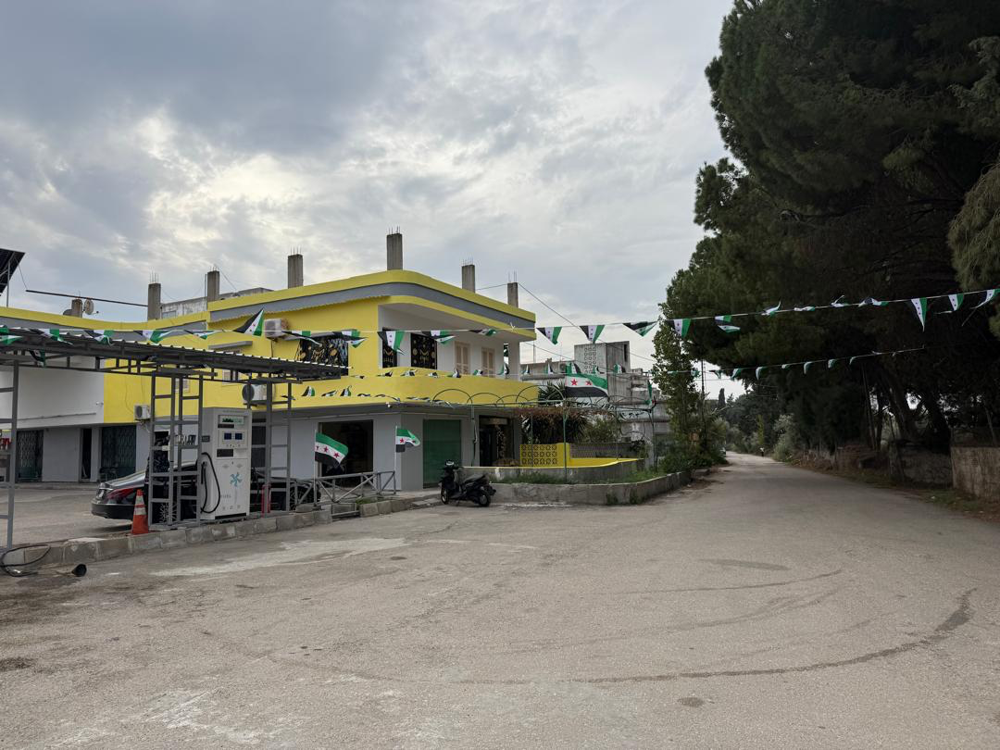
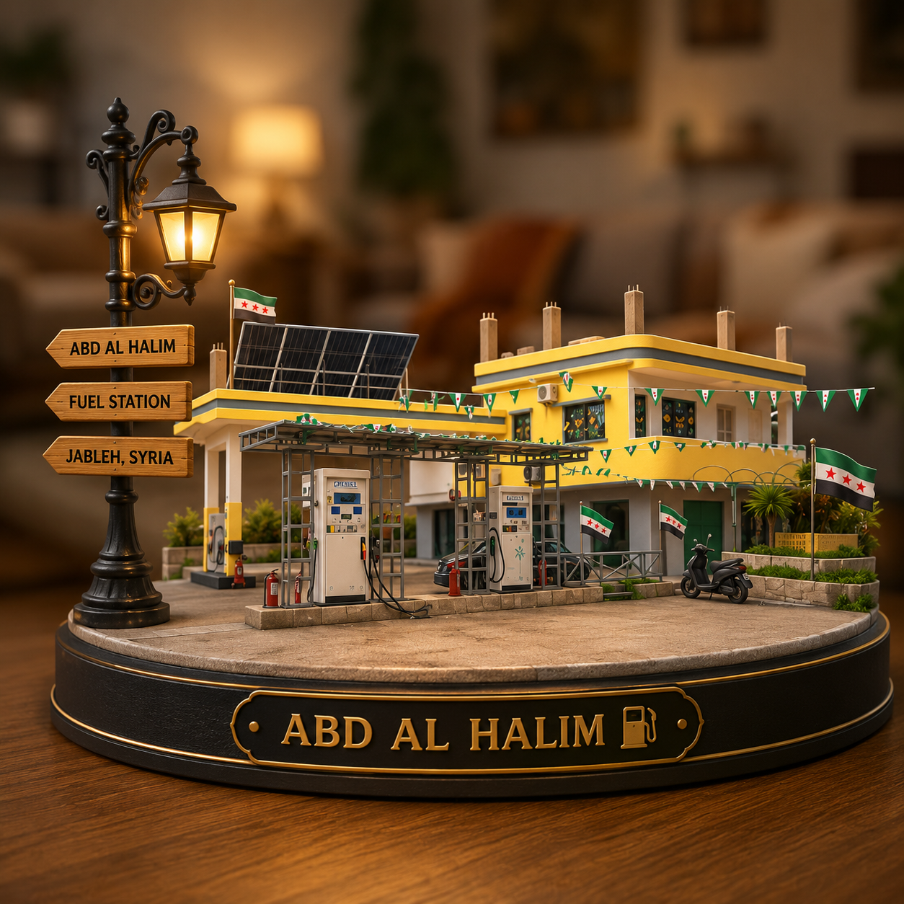
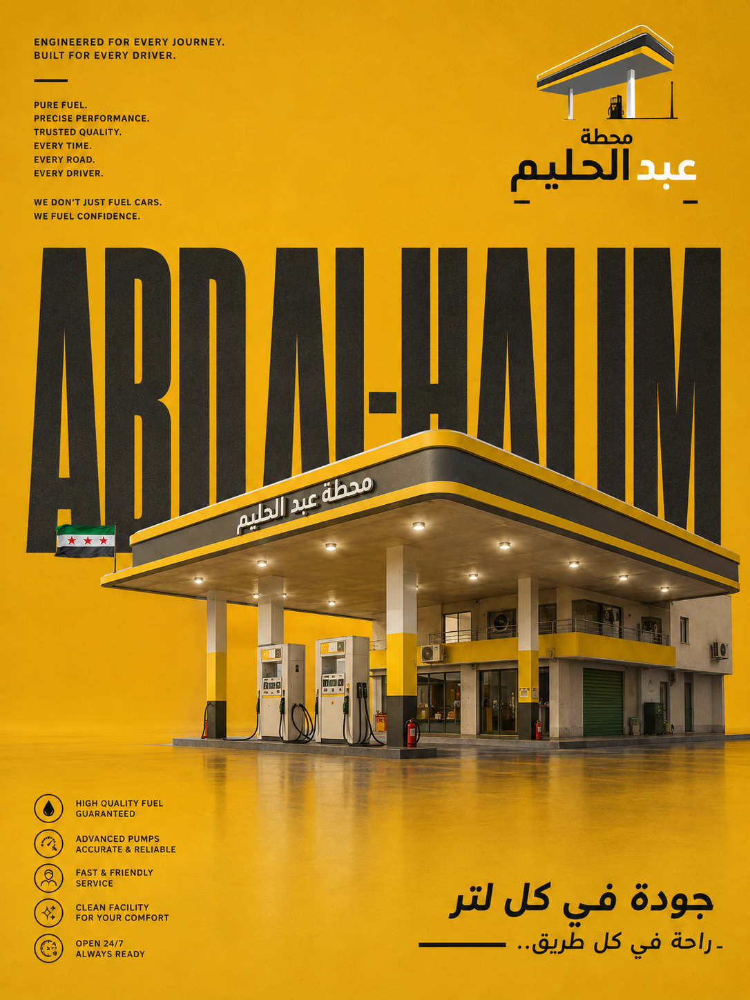
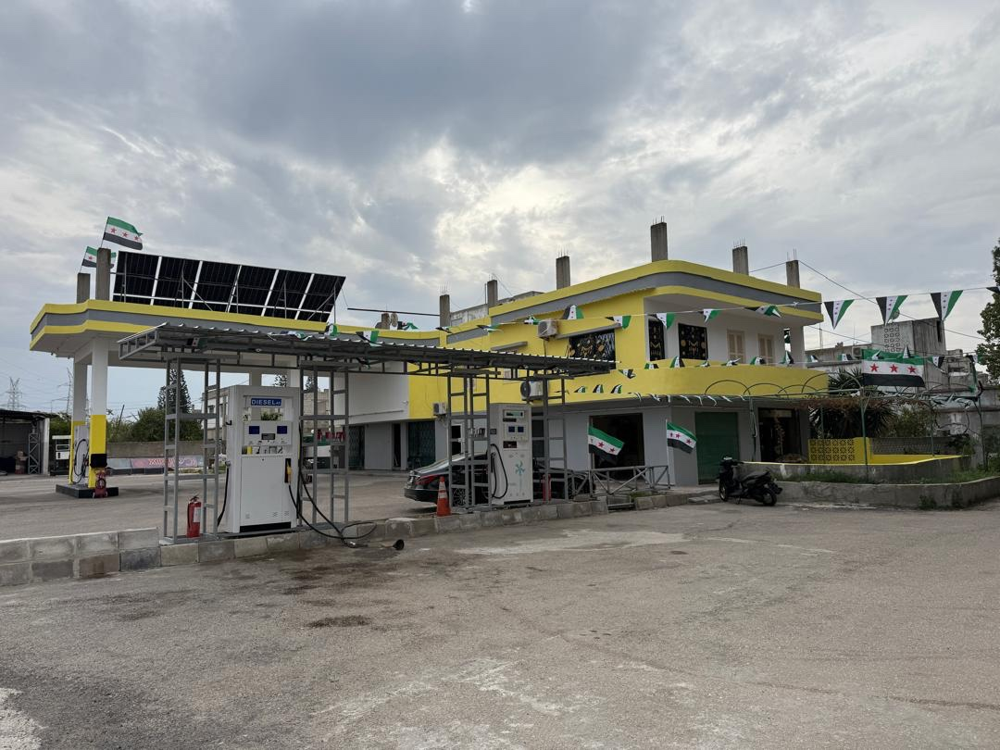

جودة في كل لتر،
راحة وأمان في كل طريق.
مرحباً بكم في كازية مصطفى عبد الحليم للمحروقات. نلتزم بأعلى معايير نقاء الوقود، دقة المضخات الرقمية، والخدمة السريعة على مدار الساعة لسيارات الركاب ومركبات النقل في جبلة وطريق الساحل الدولي.
لوحة توفر الوقود الفورية (Live Status)
مؤشرات حية لتوافر المواد في ساحة التعبئة لتوفير وقت السائقين وتجنب الازدحام
خدمات متكاملة لراحة كل سائق
حرصنا على تجهيز محطة عبد الحليم بأحدث التقنيات لتقديم تجربة وقود سريعة، مريحة، وآمنة.
مضخات وقود رقمية حديثة
مضخات TATTAN عالية الدقة مع شاشات رقمية واضحة تعكس كل لتر بدقة متناهية وسرعة تدفق مثالية لتقليص مدة الانتظار.
خدمة 24 ساعة دون انقطاع
أبواب المحطة مفتوحة ليلاً ونهاراً بإضاءة ليلية ساطعة وكوادر عمل مدربة للتعامل مع مختلف المركبات والظروف الجوية.
فحص ضغط الإطارات والمياه
نقطة فحص وضبط ضغط هواء الإطارات ومياه التبريد متوفرة مجاناً لكافة زوار المحطة للتأكد من سلامة مركبتك قبل السفر.
فحص وتغيير الزيوت خدمة مساندة
توفر تشكيلة من زيوت المحركات المعتمدة عالمياً ومحلياً (مثل Liqui Moly وغيرها) مع استشارات فنية لمستوى ولزوجة الزيت.
بنية تحتية هندسية تضمن نقاء كل قطرة
في كازية عبد الحليم، لا نكتفي بتعبئة الوقود، بل نضمن سلامة محرك سيارتك عبر بنية تحتية متكاملة تتضمن خزانات معزولة بأحدث المعايير، أنابيب تفريغ مقاومة للترسيب، وفلاتر تنقية رقمية دقيقة تمنع مرور أي شوائب أو رواسب.
-
خزانات أرضية معزولة ومحمية: مصممة بنظام الحماية المزدوجة ضد الرطوبة وعوامل الطقس لمنع تكاثف المياه.
-
أنظمة السلامة ومكافحة الحريق: توزع أجهزة إطفاء جاهزة وأجراس إنذار فورية في كافة أرجاء الساحة.
-
محطة مدعومة بألواح الطاقة البديلة: توليد كهربائي مستدام يضمن عمل اللوحات والمضخات باستمرار.

عراقة الطريق • رفيق السفر عبر الأجيال
من شمس السبعينيات الدافئة وحتى أحدث تقنيات اليوم الرقمية، رافقت كازية عبد الحليم للمحروقات قوافل السائقين وحركة النقل على طريق الساحل السوري بكل أمانة وجودة ودقة لا تتبدل.

خلف المقود.. وجهة الأمان الأولى
مشهد استثنائي يضعك في مقعد السائق خلف لوحة العدادات الخشبية، متجهاً نحو مظلة المحطة وشاخصة الطرق (دمشق 140 كم / حمص 70 كم). محطة بُنيت خصيصاً لتمنح السائقين سكينة التوقف وراحة المتابعة.

تموضع استراتيجي متجذر عبر الزمن
مسح جوي يوثق الهندسة المكانية للمحطة بمحاذاة الشريان الحيوي السريع، ومبنى الخدمات المتكامل (زيوت • بطاريات • إطارات • فحص فني) المحاط بأشجار الزيتون وطبيعة ريف جبلة الساحرة.
«لم تكن كازية عبد الحليم يوماً مجرد مضخات وقود على قارعة الطريق، بل هي عهدٌ من الأمانة، وراحة لكل مسافر، وذاكرة حية تنبض بالثقة جيلاً بعد جيل.»— كازية عبد الحليم للمحروقات (جبلة)
المحطة بعيون الزوار والواقع
مشاهد حقيقية ومجسمات تفاعلية توضح مرافق كازية عبد الحليم للمحروقات في جبلة.






موقع استراتيجي وسهل الوصول في جبلة
